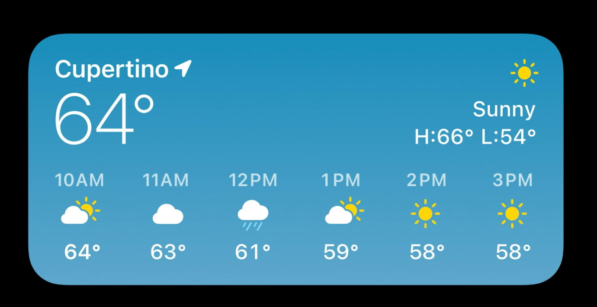
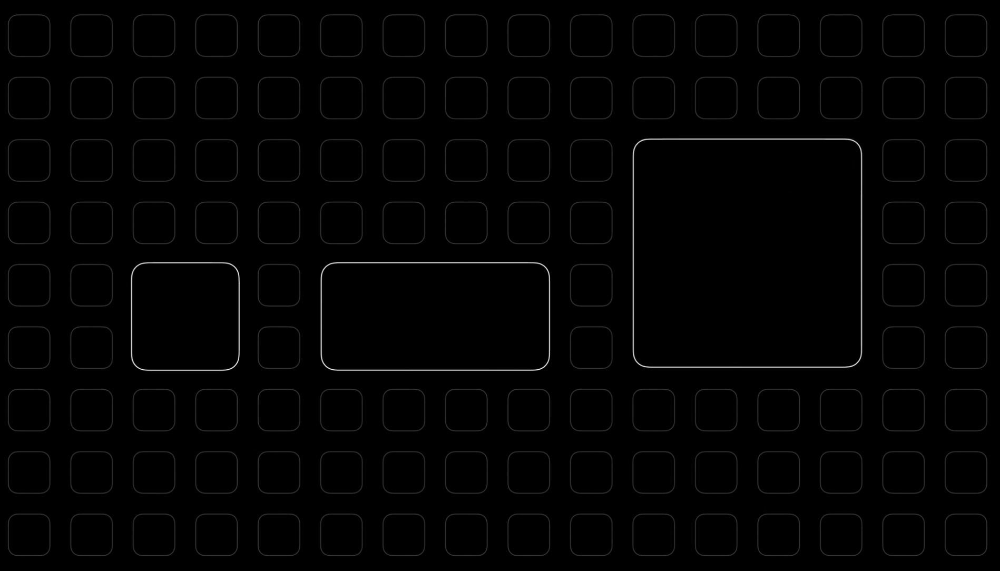
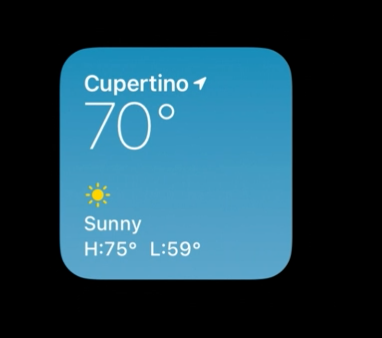
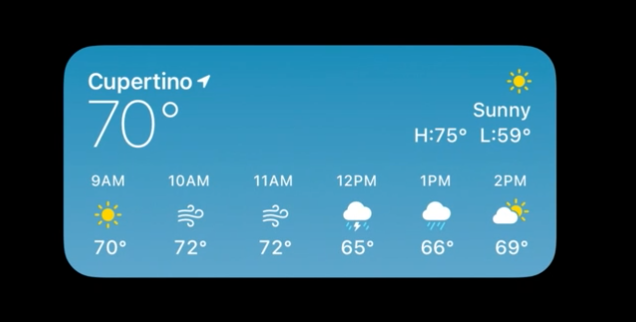
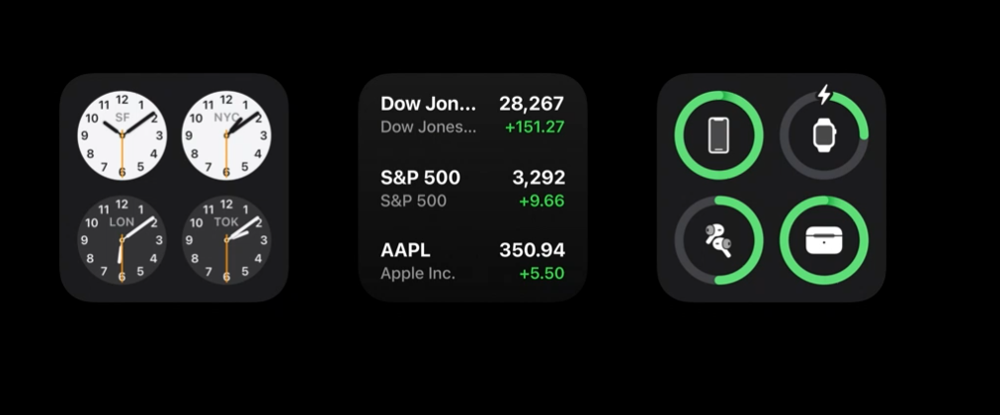

在 iOS 14 中，主屏幕的使用体验焕然一新，通过引入「小组件」主屏幕变得更加动态化和个性化。新的小组件设计得更加大胆、一目了然，不仅可以显示在 iPhone 的主屏幕上，还能显示在 iPhone 和 iPad 的全新的「今天视图」中以及 macOS Big Sur 中的新的通知中心中。
本文将以最核心的 iOS 14 的小组件为例，聊一聊 iOS 14 小组件的变化和如何为 iOS 14 设计小组件。
目录
小组件新的变化
在 iOS 14 中，整个小组件的体验被完全重新设计，它有着完全不同的新的视觉外观，并有着强大的新的能力。你的 app 的小组件要展示的信息可以比以前更及时更情景化，通过拖放、编辑可以让人们用一种直观、灵活的方式直接控制他们的小组件。
特别要提到的一点就是人们现在可以把这些小组件直接添加到他们的主屏幕页面上，这为用户创造了一种全新的体验小组件的方式，所以在设计时，你需要考虑一整套新的设计考量因素。
另一个需要提到的亮点是「智能堆叠」（Smart Stacks），这个功能可以让你在一个位置添加多个不同的小组件，并可以在多个不同的小组件之间轻扫快速切换。但智能堆叠最强大的一点在于它可以根据你的使用习惯动态改变。在基于你的行为和使用场景的基础上，智能堆叠可以在某个特定的时间自动轮换展示与你最相关的那个小组件。这样在你自己操作之前，你想要寻找的信息就会早已出现你的面前。
例如，当我醒来时我可能想要知道今天的天气状况：
当我在上班路上时，我总是播放最近喜欢的音乐：
而在下午，我总是会查看交通状况如何以及回家需要多长时间：
到了晚上，我会查看并阅读一些当天的新闻头条：
这是一个基于我的行为习惯的智能堆叠小组件的示例，但是智能堆叠的小组件及其行为对于每个人都是不同的，它会根据人们使用设备的方式以及对人们最重要的信息作出判断和选择。
新的小组件是支持在 iOS、iPadOS、macOS 多个平台上跨平台使用的，所以通过 WidgetKit 创建的小组件用户界面是完全用 SwiftUI 构建的，这也是 Apple 平台中第一个只支持 SwiftUI 的功能。SwiftUI 也使得对动态类型、深色模式功能的支持变得更简单。
以上是关于小组件新功能的一个快速浏览，记得人们与小组件发生交互的方式，在接下来的文章中还会深入了解这些功能。
小组件的基本特性
小组件的设计有三个主要的特性：一目了然、高相关性、个性化。
一目了然
后面的文章会讲到，小组件可以提供多种尺寸，最小的小组件尺寸只有主屏幕上四个图标的空间大小，所以你需要好好利用好这个空间。人们每天在主屏幕上停留的时间是有限的，平均每个人每天要前往主屏幕 90 次，但只会在主屏幕上停留一小会儿。他们不应该需要与小组件发生交互才能获取更多信息，应该只需要轻轻一瞥就能发挥小组件的最大价值，内容本身就是焦点。
有一点非常重要：小组件不是一个迷你 app。把小组件看作是你的 app 的更多内容被放置在了主屏幕上，而不是把一个具备完整功能的迷你 app 放置在了主屏幕上。
高相关性
高相关性是小组件的第二个特性。例如，早上的时候我更关心天气状况，但在白天工作时我会更关心提醒事项中的内容，在一天结束时我想要听听音乐。特别是在手机这个平台上，我们希望充分利用好每一处空间，通过一种方式确保你想要的小组件可以及时出现在你的面前，这就是智能堆叠，它可以帮助你始终在堆叠的最上面显示你最想看到的小组件，你可以通过 WidgetKit API 帮助系统判断什么时候你的小组件是高度相关的，什么时候不是。
个性化
一个好的小组件也应该是个性化的。就像天气 app 的小组件一样，你可以根据自己的需要选择不同尺寸的小组件，还可以选择小组件中要展示的天气位置信息。
设计小组件
当设计一个小组件时，这里有两个主要的设计过程需要特别注意：构想和创造。
小组件的构想
设计准则
在第一部分，文章会谈到一些设计准则以帮助指导你的想法，并去深入了解一些你需要在这一步考虑的重要的新功能。
新的小组件系统完全围绕内容而创造，为了创造一个好的小组件，你需要理解用户如果回到你的 app 中需要查看的最有用的信息或者体验是什么。
在考虑小组件的想法和目标时，我们需要聚焦于三个设计目标方向：个性化 personal、信息性 informationnal、情景化 contextual。
我们想要寻找那些个人的东西，因为它们可以与你的 app 的一部分或者与个人相关的体验之间创建更深的情感连接。
小组件提供了一个好的方式从人们的设备的众多信息源中筛选出一部分重要的信息来展示。展示正确的信息可以节省人们在你的 app 中做重复性操作的时间。
人们一整天都会和自己的设备在一起，有很多信号可以推测一个人所处的情景环境。情景可以帮助在正确的时刻展示正确的信息，创建一个似乎可以预测人们的需求和下一步动作的更好的体验。
来看下在设计一些小组件时，这三个目标方向是怎样让我们确定想法，做出决定的。
「日历」app 的小组件，就像 app 图标一样它展示了一周的一天和现在的日期，还展示了你的下个会议或者日程。像是日程开始时间和日程位置这些可以一瞥而见的细节可以让人们不用打开 app 就可以找到这些信息。
如果你的时间表很忙、日程很多，小组件会收起一些低相关的信息，优先展示众多日程中最重要的部分。
当一天即将结束时，不要展示一个空白的小组件，而是展示明天的日程。这是一个超越当前情景时刻思考、拓宽情景相关的时间范围的好例子。
一个更突出个性化的细节是小组件会根据你居住的地区显示假期日历，并在一些特别的节日添加了提醒。
当某个联系人的生日到来时，会显示一个礼物图形，并把这条信息放在最前面，这样从主屏幕上你可以感受到与小组件的更个性化的情感连接。
「照片」app 的小组件是个性化小组件体验是什么样的一个好例子。在这个小组件中，最令人愉悦的体验是展示最佳照片而不是展示最近拍摄的照片。
除了回忆照片，还会展示为你推荐照片。利用情景化的优势，这个小件还会展示过去的今天的照片回忆。
「天气」app 的小组件展示了当前位置的城市名字、包含最高和最低温度的当前温度信息以及接下来几个小时的天气信息。这个小组件是情景化小组件是什么样的一个好例子。

小组件中展示独一无二的天气信息，如大风、雷电、是否下雨、什么时候开始下雨，并可以根据情景增加接下来几个小时的天气预报信息。
地图常用于确认你的地理位置，查看周围有什么。
「地图」app 的小组件建立在这种空间意识上，当你不在家或者开车去了其他地方，小组件会显示你停车的地方。
如果你接下来有一个日程，小组件会显示到那里有多远，根据情景展示去那里的路线。当你不在家时，小组件会展示你回家需要花费的大致时间。
你可以在这些所有的例子中看到小组件是动态变化的，是为用户提供有用信息的，情景化细节让小组件的使用体验变得更加个性化、更加适应一个人的需求。
支持编辑
小组件的一个新的能力是人们可以编辑小组件。在构想小组件时，你需要仔细思考这个。因为它可以改变你要在一个小组件上所展示信息的多少。
来看一下天气 app 的小组件的编辑功能是如何工作的。在 iOS 14 中的编辑状态下，你的小组件会像 app 的编辑模式时那样晃动，你可以点击一个小组件以查看它可以允许你编辑什么信息。在这里，天气小组件可以让你改变它展示的天气信息的具体位置。
默认情况下它会展示你当前位置的天气信息，所以当一个人添加一个小组件，他不需要做什么额外的工作。如果我点击位置区域，我就可以获得一个我喜爱的天气城市的列表供我选择，或者可以通过搜索选择其他位置。
在 iOS 14 中，你可以添加尽可能多的天气小组件，针对于每一个天气小组件编辑调整成你想要的位置。这个功能最好的一点是它避免了那种把各种信息组合在一起的十分复杂的单个小组件，这样可以让用户根据自己对信息的需求选择添加多个小组件，通过编辑功能让每个小组件显示自己想要的信息。现在我可以让多个位置的天气信息同时摆放在一起。
在 iOS 中的大多数小组件支持编辑功能，像是下图中的时钟小组件一样，你可以选择不同的提醒列表、股票、备忘录或者世界时钟来展示在桌面上。
这些都是支持编辑功能的小组件的主要使用场景，也可以有其他使用场景。思考一下你可以给用户提供哪些选项以最大化人们使用小组件时的实用性和灵活性。
多种样式
在构想过程中还需要考虑的一点是决定是否要提供小组件的多种样式。对于「股票」app，有两种不同的想法：一种是提供一个小组件展示你的关注列表的概括信息，一瞥就能看见；另一种是每一支股票作为一个小组件，以跟踪它的具体信息，就像前面提到的天气小组件一样。
在 iOS 14 中的某些 app 提供了多种样式的小组件，像是「新闻」app 可以让你跟踪某个话题下的新闻热点，「备忘录」app 让你展示最喜欢的备忘录或者添加一个共享的备忘录文件夹。
综上，文章讲了在构想小组件时一些重要的设计准则和考量，下一部分会讲到怎样把这些想法落地成具体的小组件。
小组件的创造
在小组件的创造这一部分有三点需要讲。
尺寸和交互
第一点是尺寸和交互，新的系统支持三种尺寸供你设计：小、中、大，让小尺寸的小组件显示 app 中最有用的内容。

小尺寸的小组件支持一个点击目标，点击后可以跳转到小组件上对应的内容中，跳转到的地方取决于你的 app 结构是怎样的。
来看几个具体的例子，小尺寸的日历小组件总是显示接下来的日程，点击它会跳转到 app 中「天」视图中的最新日程，同时可以让对这一天的其他日程有一个大概浏览。
小尺寸的新闻小组件可以预览一个你可能感兴趣的新闻故事，点击它会跳转到 app 中那个新闻故事中。
中尺寸和大尺寸的小组件有着类似的熟悉的形状，这两种尺寸可以承载更多内容，支持多个点击目标。在这两种小组件中点击一部分内容也会跳转到 app 中对应内容的位置。
例如在新闻的小组件中，点击任何一篇文章会跳转到 app 中你点击的那个新闻故事中。
在小组件系统中有三个不同的点击样式：
- Fill Style：这种适合于当这部分需要深入链接到 app 中的某一部分内容，小尺寸的小组件都用的这种样式，因为它只支持一个点击目标；
- Cell Style：这种适合于让小组件中被选中的部分保持它本身的形状，例如文件 app 的小组件；
- Content Style：这种适合于在小组件中选中一部分内容本身时使用，例如日历 app 的小组件。

内容和个性化
第二点是内容和个性化。让你的小组件落地的最重要的一部分是其中的内容是什么，在设计小组件时你应该把内容和个性化一起思考。问问你自己：当用户打开你的 app 时在寻找什么？在你的 app 中搜寻那些对用户有用的独特信息。
来看几个思考内容和个性化的例子。在设计小组件时，我们通过思考 app 本身的样子来考虑个性化。对于天气小组件，我们使用熟悉的天气条件背景样式，还有来自于 app 中的图形样式。

对于新闻小组件，我们从你看到的新闻故事的丰富的故事图表中汲取灵感。
对于日历小组件，我们从它的极简外观和熟悉的红色配色来汲取灵感，将目光全部聚焦于接下来的日程。
另一个寻找个性化的方法是从你的 app 的图标中汲取灵感。像是备忘录的小组件，我们从备忘录样式的图标中汲取灵感：
播客的小组件，我们从紫色渐变样式的图标中汲取灵感：
同样的提示 app 的小组件使用了 app 图标中的黄色渐变：
当说到在你的小组件中放置内容时，有两种设计模式。第一种是在所有三种尺寸上扩展的布局，像是天气 app 的小组件，在每种尺寸上添加额外的信息；


第二种是不同的尺寸的内容是完全不一样的，像是新闻 app 的小组件，小尺寸的包含新闻故事的丰富内容，中尺寸的聚焦于展示更多新闻故事。

当你为每种尺寸进行设计时，确保不要把小尺寸的内容放大到更大尺寸上。
仔细考虑每种尺寸上要展示的信息，选择每种尺寸最合适的信息来展示。例如屏幕时间的大尺寸小组件，因为有了更多的空间可以展示更多有用的信息，我们在小组件上增加了表格的尺寸，同时包含了分类和 app 细节。
如果你的 app 没有更多信息在大尺寸的小组件上展示，你可以只支持特定的尺寸，不需要在所有尺寸的小组件上都应用同一个想法。
像下面这个例子一样，你可能想要在小尺寸的小组件上展示一些概括性的信息，我们只推荐在小组件上展示最多四条信息。

模式
再来讲一讲更多关于小组件模式的细节。当我们设计小组件时，有一些常见的布局模式可以应用于不同的尺寸，这些模式可以帮助你在一开始的时候将你的想法逐渐落地。
当你自己设计自定义的布局样式时，在所有尺寸上都要遵守 16pt 的布局边界以确保在与其他小部件摆放在一起时，小部件上的内容是一致的。

对于有形状的布局，像是圆形或者其他嵌入图形，可以在所有尺寸上使用更紧凑的 8pt 布局边界。
这些形状的边角如果靠近小组件的边缘，那它们应该和小组件的圆角半径有着相同圆心。
因为小组件的圆角半径在不同尺寸上是不一样的，我们提供了一个 SwiftUI 容器以让你的小组件的形状可以自动与小组件的圆角半径保持相同圆心，而不需要手动指定具体的圆角半径值。
对于字形，你应该使用 SF Pro 或者 SF 的其他变形（比如 SF Mono、SF Pro Rounded）。如果使用一个自定义字体对于你的小组件表达品牌和个性化十分重要，确保它和其他小组件放在一起时可以保持和谐。
小组件应该在浅色外观和深色外观模式下都保持显示良好。例如日历 app 的小组件，整个小组件会像 app 本身一样在浅色和深色外观之间变化。
播客 app 的小组件，因为整个背景是渐变的，在两种外观下都可以显示良好。

备忘录小组件因为有着顶部的标志性颜色和下半部分的白色，在深色外观下就只对下半部分进行调整，这样就和 app 内部保持一致了。

每一个小组件必须提供一个占位符用于系统无法展示小组件的真实数据的时候。你应该在这个状态展示基本的图形元素，在信息展示的文本区域显示区块。
当系统从占位符状态变成可以读取到真实数据时，实际的内容就可以直接替换掉固定的元素，不需要让布局或者颜色发生较大的变化。
在添加小组件时的预览界面，展示的就应该是真实数据，这可以让用户在预览时就能直观地感受到在真正使用时的体验。
小建议
最后一件要讲的事是在设计小组件时要记住的一些小建议。
- 如果你的 app 汇集了不同来源的内容，你应该在小组件中只使用一个 logo，像下面这个例子。为了在不同尺寸的小组件上保持一致性，你的 logo 应该总是位于右上角，不要再添加额外的文字标记。
- 不要在小组件上放置你的 app 图标；
- 不要在小组件上放置你的 app 名字，因为在小组件的下面系统会显示你的 app 名称；
- 不要把指导用户使用或告知用户的文字放置在小组件上，如果有什么重要的事情需要传达给用户，使用一种图形方式来表达；
- 当在一个小组件上展示时间先后顺序的内容时，不要使用「最近更新」这样的话语。
小组件的展望
iOS 14 的小组件焕然一新，它的核心目标是将 app 中的重要的、用户需要经常查看的核心内容提取出来，方便用户在需要的时候可以在主屏幕等地方一目了然地看到。但相比 iOS 13 的小组件，其极大地弱化了甚至可以说剔除了在小组件内进行简单交互的功能，比如在小组件内控制智能家居、在小组件内管理剪贴板、在小组件内进行简单的数据计算等，iOS 14 的小组件更强调内容的静态展示，用户需要查看更多内容、进行更多操作，与小组件发生交互后会直接进入 app 内对应的模块。
信息静态展示、不允许内部交互、跨平台通用、SwiftUI Only 这些对小组件大刀阔斧的改变在一段时间内对开发者、对用户或许会是痛苦的，但这也许只揭开了小组件的冰山一角，传闻中的 Apple Glasses 说不定才是小组件真正崭露头角的地方？
参考链接
- Design great widgets - WWDC 2020 - Videos - Apple Developer
- Widgets - System Capabilities - iOS - Human Interface Guidelines - Apple Developer
- Meet WidgetKit - WWDC 2020 - Videos - Apple Developer
如果你觉得这篇文章对你有所帮助，欢迎请我喝杯咖啡，感谢你的支持😁